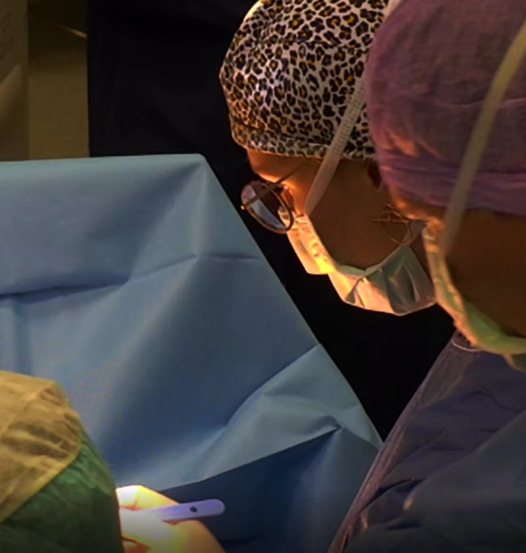

A Novel Sinus Node Sparing Hybrid Ablation Approach for Inappropriate Sinus Tachycardia
JTCVS Techniques · Apr 2024 · Kronenberger R, Pannone L, Monaco C, La Meir M et al.
Impact of Disinfection and Sterilization on 3D-Printing Resin Performance for Surgical Guides in Cardiac Ablation Surgery
Bioengineering · Aug 2025 · Kronenberger R, Kazma R, Amirabadi A et al.
Electroanatomic Mapping Reconstruction with Photogrammetry Across Different Mapping Systems
Frontiers in Imaging · Feb 2025 · Talevi G, Pannone L, Della Rocca DG, Kronenberger R et al.
2D Speckle-Tracking Echocardiography Assessment of Left Atrial and Left Ventricular Mechanics: Outcomes in Patients with Atrial Fibrillation Treated with Hybrid Ablation and Left Atrial Appendage Surgical Closure
Frontiers in Bioengineering and Biotechnology · Mar 2025 · Paparella AM, Pannone L, Pedrizzetti G, Kronenberger R et al.
Endo-Epicardial Mapping of Human Sinus Node In-Vivo: Novel Electrophysiological Findings and Anatomical Correlations
Circulation: Arrhythmia and Electrophysiology · Mar 2025 · Eltsov I, Pannone L, Della Rocca DG, de Asmundis C et al.
CTGAN-Driven Synthetic Data Generation: A Multidisciplinary, Expert-Guided Approach (TIMA)
Computer Methods and Programs in Biomedicine · Nov 2024 · Parise O, Kronenberger R, Parise G, La Meir M et al.
Advancing Surgical Arrhythmia Ablation: Novel Insights on 3D Printing Applications and Two Biocompatible Materials
Biomedicines · Apr 2024 · Monaco C, Kronenberger R, Talevi G, de Asmundis C et al.
Pericarditis Prophylactic Therapy after Sinus Node Sparing Hybrid Ablation for Inappropriate Sinus Tachycardia / Postural Orthostatic Sinus Tachycardia
Heart Rhythm O2 · Feb 2024 · de Asmundis C, Marcon L, Pannone L, Kronenberger R, La Meir M et al.
Redo Procedures after Sinus Node Sparing Hybrid Ablation for Inappropriate Sinus Tachycardia / Postural Orthostatic Sinus Tachycardia
EP Europace · Dec 2023 · de Asmundis C, Marcon L, Pannone L, Kronenberger R, La Meir M et al.
Coronary Artery Disease in Atrial Fibrillation Ablation: Impact on Arrhythmic Outcomes
EP Europace · Dec 2023 · Cappello IA, Pannone L, Della Rocca DG, de Asmundis C et al.
Development of a Patient-Specific Epicardial Guide for Ventricular Tachycardia Ablation Surgery Using High-Consistency Rubber Silicone Molding
Biomedical Engineering Online · Nov 2025 · Kronenberger R, Candelari M, Cappello IA et al.
3D Mapping Challenges in Hybrid Video-Assisted Thoracoscopic Surgical Ablation of Brugada Syndrome
Interdisciplinary CardioVascular and Thoracic Surgery · Sep 2023 · Eltsov I, Pannone L, Ramak R, La Meir M et al.
Excision of Atrial Myxoma Through a Totally Thoracoscopic Approach on the Fibrillating Heart
Jun 2023 · Kronenberger R, Bentala M, Devos A, La Meir M et al.
Hybrid Atrial Fibrillation Ablation: Long-Term Outcomes from a Single-Centre 10-Year Experience
EP Europace · May 2023 · Pannone L, Mouram S, Della Rocca DG, de Asmundis C et al.
Stiff Left Atrial Syndrome with Pulmonary Veins Occlusion after Percutaneous Radiofrequency Ablation: A Life-Long Complication that Can Lead to Heart Transplantation
Journal of Cardiothoracic Surgery · May 2023 · Kronenberger R, Tanaka K, de Asmundis C, La Meir M
Epicardial Open Chest Ventricular Tachycardia Ablation in No Entry Left Ventricle
European Journal of Cardio-Thoracic Surgery · Apr 2023 · Kronenberger R, Pannone L, de Asmundis C, La Meir M
Esophageal Protection and Temperature Monitoring Using the Circa S-Cath™ Temperature Probe during Epicardial Radiofrequency Ablation of the Pulmonary Veins and Posterior Left Atrium
Nov 2022 · Kronenberger R, Parise O, Van Loo I, La Meir M et al.
Esophageal Findings in the Setting of a Novel Preventive Strategy to Avoid Thermal Lesions during Hybrid Thoracoscopic Radiofrequency Ablation for Atrial Fibrillation
Journal of Clinical Medicine · Oct 2021 · Kronenberger R, Van Loo I, de Asmundis C, La Meir M et al.
A Novel Hybrid Technique for the Repair of an Atrioesophageal Fistula Post-Atrial Radiofrequency Ablation
European Journal of Cardio-Thoracic Surgery · Oct 2021 · Kronenberger R, Mana F, Chierchia GB, La Meir M
Knowing When Not to Operate: Extravasation-Induced Necrosis in the Neonate
Clinical Medical Reviews and Case Reports · Oct 2020 · Geeroms M, Rogge F, Kronenberger R, Casaer B et al.
